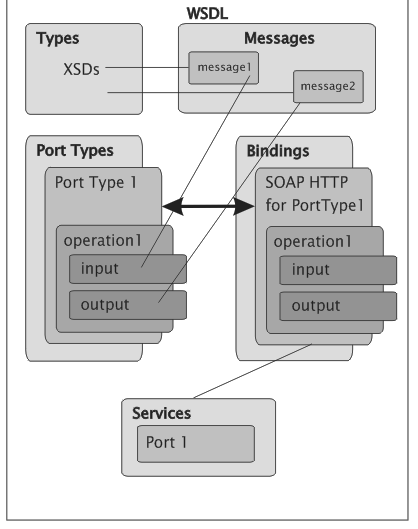
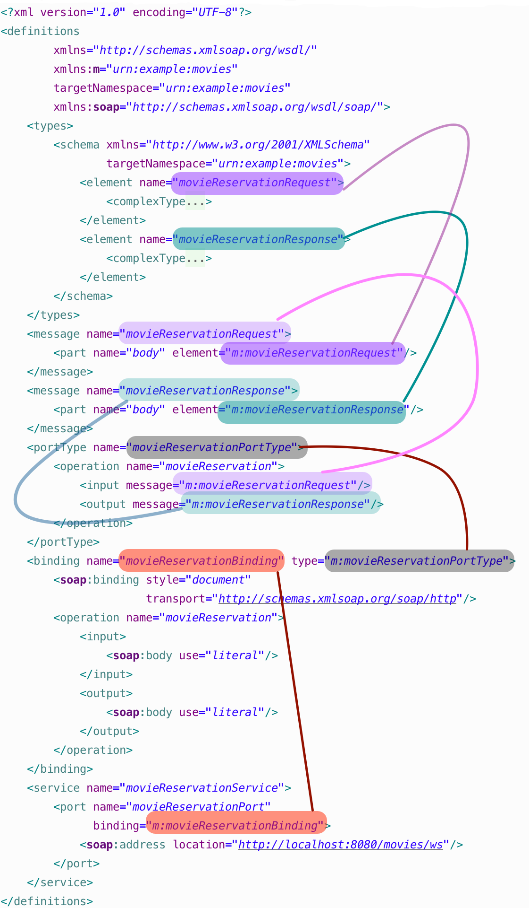

<movieReservationRequest xmlns="urn:example:movies">(1)
<title>Krv, črevá a lietajúce hlavy</title>
<date>2008-12-24</date>
<numberOfTickets>4</numberOfTickets>
</movieReservationRequest>Úvod
Pri návrhu webových služieb nad protokolom SOAP sa môžeme vydať dvoma rozličnými cestami. Pri tom jednoduchšom postavíme webovú službu vo vhodnej technológii (JAX-WS, či PHP-WSDL Creator, a WSDL si necháme vygenerovať automaticky, čím dosiahneme tzv. contract-last spôsob.
Opačný spôsob, contract-first spočíva v nadefinovaní WSDL, na základe ktorého si necháme vygenerovať jednak kostru pre server, a neskôr i klienta.
Postup od WSDL k triedam má mnohé výhody. Ota 'tapik' Buchta napr. uvádza:
tvůrce se musí nejdříve zamyslet nad strukturou dat, což nebývá tak úplně zvykem
to zabrání nutnosti neustále měnit rozhraní (a tím i WSDL) při změně datového modelu
tvůrce uvažuje v intencích dokumentů a operací nad nimi, což mu umožní přehoupnout se přes onen RPC XORBA zlozvyk
WSDL je čitelné a „hezké“ a interoperabilní (pokud je navrženo jako document-wrapped (.NET nic jiného neumí))
celý návrh systému je pak mnohem lépe udržovatelný, modularizovatelný, rozšiřitelný, znovupoužitelný, lépe odladitelný
Dokumentácia k Spring Web Services, čo je štandardná knižnica pre contract-first spôsob, podporuje tento prístup ďalšími významnými bodmi, ktoré môžu spôsobovať problémy:
-
neprenositeľné dátové typy (za všetky spomeňme napr. mapy/slovníky) a cyklické objektové grafy
-
so zmenou dát či modelu sa môže zmeniť WSDL, čo má vplyv na robustnosť
V článku si ukážeme, ako je možné vybudovať službu práve týmto zložitejším spôsobom. Ukážeme si, ako možno pochopiť jednotlivé stavebné bloky WSDL, ako ich možno vytvárať ručne, a necháme si tiež vygenerovať zdrojový kód pre JAX-WS server.
Predpokladané znalosti
-
Veľmi vám uľahčí život, ak budete poznať zásady XML a menných priestorov, napr. z krátkeho tutoriálu.
-
Oplatí sa tiež poznať XML schému a zásady jej tvorby, napr. z tutoriálu XML Schema: Tutoriál nielen pre tvorcov SOAP služieb
Príklad a štruktúra dát
V našom príklade budeme chcieť vybudovať SOAPovú službu pre rezerváciu lístkov v kine. Klient zašle požiadavku, v ktorej špecifikuje názov filmu, dátum jeho premietania a počet lístkov, ktoré si chce rezervovať. Odpoveďou bude rezervácia s identifikátorom a zoznamom rezervovaných miest.
Požiadavka
Požiadavka by mohla vyzerať nasledovne:
| 1 | V dokumentoch, ktoré tvoria jadro správy SOAP sa silne odporúča používať
menné priestory (namespaces), všetky elementy požiadavky sme priradili
do implicitného menného priestoru urn:example:movies. |
Odpoveď
Odpoveďou na uvedenú požiadavku by mohol byť dokument obsahujúci číslo rezervácie a zoznam miest na sedenie, ktoré boli zarezervované:
<movieReservationResponse xmlns="urn:example:movies">(1)
<id>2323241</id>
<reservedSeats>23</reservedSeats>
<reservedSeats>12</reservedSeats>
<reservedSeats>12</reservedSeats>
</movieReservationResponse>| 1 | Dokument s odpoveďou tiež priradíme do menného priestoru, a pre poriadok ním bude rovnaký menný priestor ako majú dokumenty s požiadavkami. |
XML schéma pre dokumenty
Na základe týchto XML dokumentov si môžeme napísať XML schému, ktorá bude definovať štruktúru pre dáta na vstupe (požiadavky) a na výstupe (odpovede). Bez definície XML schémy nevieme špecifikovať formát vstupných a výstupných dokumentov vo WSDL.
Vzťah XML schéma-dokument je podobný vzťahu trieda-objekt z OOP. XML schéma („trieda“) definuje predpis, teda štruktúru, hierarchiu a dátové typy jednotlivých elementov, a konkrétny XML dokument („objekt“) predstavuje inštanciu tejto XML schémy.
XML schému možno navrhovať viacerými spôsobmi, ale pre nás je najvhodnejší štýl „matrioška” (russian doll). Pre každý z elementov priamo určíme jeho štruktúru.
<?xml version="1.0" encoding="UTF-8"?>
<schema xmlns="http://www.w3.org/2001/XMLSchema"
targetNamespace="urn:example:movies"> (8)
<element name="movieReservationRequest"> (1)
<complexType>
<sequence>
<element name="title" type="string" /> (2)
<element name="date" type="date" /> (3)
<element name="numberOfTickets" type="int" /> (4)
</sequence>
</complexType>
</element>
<element name="movieReservationResponse"> (5)
<complexType>
<sequence>
<element name="id" type="int" /> (6)
<element name="reservedSeats"
type="int"
maxOccurs="unbounded" /> (7)
</sequence>
</complexType>
</element>
</schema>| 1 | Element movieReservationRequest predstavuje jeden z dvoch možných koreňových elementov, v tomto prípade pre požiadavku. |
| 2 | Názov filmu je reprezentovaný podelementom <title>. Jeho dátový typ je string (reťazec). |
| 3 | Dátum premietania, t. j. element <date> má dátový typ date (dátumový typ XML schémy) |
| 4 | Počet lístkov, číslo typu int je reprezentované elementom <numberOfTickets>. |
| 5 | Element movieReservationResponse predstavuje druhý koreňový element pre odpoveď, teda dokument s potvrdenou rezerváciou. |
| 6 | Element <id> predstavuje číselné (int) číslo rezervácie. |
| 7 | Element <reservedSeats> obsahuje čísla sedadiel. Nastavenie `maxOccurs vraví, že tento element sa môže opakovať mnohokrát. |
| 8 | Všetky deklarované elementy budú spadať do cieľového menného priestoru (target namespace) urn:example:movies. |
Schému môžeme dokonca publikovať na konkrétnej webovej adrese, dostupnej
cez webový prehliadač. Ak by sa schéma ocitla na adrese
http://movie.novotnyr.sk/schema.xsd, môžeme mať dokument, ktorý vieme
priamo validovať oproti schéme.
<movieReservationRequest
xmlns="urn:example:movies"
xmlns:xsi="http://www.w3.org/2001/XMLSchema-instance" (1)
xsi:schemaLocation="urn:example:movies http://movie.novotnyr.sk/schema.xsd"> (2)
<title>Krv, črevá a lietajúce hlavy</title>
<date>2008-12-24</date>
<numberOfTickets>4</numberOfTickets>
</movieReservationRequest>| 1 | Deklarovali sme menný priestor pre inštanciu schémy. |
| 2 | V atribúte schemaLocation namapujeme menný priestor na príslušnú schému: v tomto prípade elementy z menného priestoru urn:example:movies možno
validovať oproti schéme zverejnenej na adrese
http://movie.novotnyr.sk/schema.xsd. |
WSDL súbor
Minimalistický WSDL súbor bez akýchkoľvek deklarácii vyzerá nasledovne:
<?xml version="1.0" encoding="UTF-8" ?>
<definitions
xmlns="http://schemas.xmlsoap.org/wsdl/" (1)
targetNamespace="urn:example:movies" (2)
xmlns:m="urn:example:movies" (3)
xmlns:soap="http://schemas.xmlsoap.org/wsdl/soap/"> (4)
</definitions>| 1 | implicitný menný priestor http://schemas.xmlsoap.org/wsdl/ zodpovedá norme WSDL 1.1. V niektorých WSDL je tento priestor uvedený explicitne, s prefixom wsdl. |
| 2 | atribút targetNamespace obsahuje cieľový
menný priestor pre elementy deklarované v rámci tohto WSDL súboru. |
| 3 | Prefix m budeme využívať v prepojeniach medzi elementami WSDL. Pre jednoduchosť volíme rovnaký cieľový menný priestor ako v prípade XML schémy. |
| 4 | Prefix soap sa vzťahuje na menný priestor
http://schemas.xmlsoap.org/wsdl/soap/ a použije sa pri definovaní
formátu správ v sekcii binding. |
Schéma a dátové typy
V prvom kroku potrebujeme zadefinovať štruktúru vstupných a výstupných
dát, čo zabezpečíme sekciou <types>. Máme dve možnosti:
-
buď sa odkážeme na externú XML schému prítomnú v samostatnom súbore.
-
alebo uvedieme XML schému priamo vo WSDL súbore.
V oboch prípadoch deklarujeme v sekcii types vnorený element schema
z menného priestoru prináležiaceho špecifikácii XML Schema.
<types>
<schema xmlns="http://www.w3.org/2001/XMLSchema"
targetNamespace="urn:example:movies">
<!-- explicitná XML schéma alebo odkaz na externú XML schému -->
</schema>
</types>Schéma XML bude mať rovnaký cieľový priestor (targetNamespace) ako má
WSDL.
Externá XML schéma
Ak máme XML schému definovanú v externom súbore, môžeme sa na ňu
odkázať. Vyššie sme definovali vlastnú schému schema.xsd s cieľovým
menným priestorom urn:example:movies, ktorý je rovnaký ako cieľový
menný priestor WSDL súboru.
<?xml version="1.0" encoding="UTF-8"?>
<definitions
xmlns="http://schemas.xmlsoap.org/wsdl/"
xmlns:m="urn:example:movies"
targetNamespace="urn:example:movies"
xmlns:soap="http://schemas.xmlsoap.org/wsdl/soap/">
<types>
<schema xmlns="http://www.w3.org/2001/XMLSchema
targetNamespace="urn:example:movies">
<include schemaLocation="schema.xsd" />
</schema>
</types>
</definitions>Keďže menný priestor našej schémy XML je rovnaký ako cieľový menný
priestor WSDL súboru, môžeme použiť deklaráciu include. Ak by sa menné
priestory líšili, musíme schému vložiť pomocou elementu import.
Umiestnenie XML schémy v atribúte schemaLocation môže byť dvojaké:
-
relatívne, kde sa súbor so schémou nachádza relatívne vzhľadom na „adresár“, v ktorom je súbor WSDL.
-
absolútne, kde uvedieme kompletnú adresu URL, z ktorej si môžeme stiahnuť schému, napríklad
http://movie.novotnyr.sk/schema.xsd.
V oboch prípadoch sa na uvedenej lokácii musí nachádzať verejne dostupný súbor so schémou XML.
Všetky elementy zo schémy sa po include ocitnú v mennom priestore
urn:example:movies.
Priamo uvedená schéma
<?xml version="1.0" encoding="UTF-8"?>
<definitions xmlns="http://schemas.xmlsoap.org/wsdl/"
xmlns:m="urn:example:movies"
targetNamespace="urn:example:movies"
xmlns:soap="http://schemas.xmlsoap.org/wsdl/soap/">
<types>
<schema xmlns="http://www.w3.org/2001/XMLSchema"
targetNamespace="urn:example:movies">
<element name="movieReservationRequest">
<complexType>
<sequence>
<element name="title" type="string" />
<element name="date" type="date" />
<element name="numberOfTickets" type="int" />
</sequence>
</complexType>
</element>
<element name="movieReservationResponse">
<complexType>
<sequence>
<element name="id" type="int" />
<element name="reservedSeats"
type="int"
maxOccurs="unbounded" />
</sequence>
</complexType>
</element>
</schema>
</types>
</definitions>Všimnime si, ako sme medzi elementy <types>…</types> bez zmeny
vložili celú deklaráciu XML schémy, ktorú sme definovali v predošlej
sekcii, čím sme doslova nasimulovali deklaráciu include.
Správy
Ďalej potrebujeme definovať abstraktné správy, ktoré budú putovať medzi
klientom a serverom. Je zjavné, že správy budú dve: požiadavka
movieReservationRequest a odpoveď movieReservationResponse. Každá
bude mať jednu časť part tvorenú príslušným koreňovým elementom.
Požiadavka
Požiadavka bude pozostávať z koreňového elementu
movieReservationRequest z menného priestoru urn:example:movies,
ktorému sme priradili prefix m.
<message name="movieReservationRequest">
<part name="body" element="m:movieReservationRequest"/>
</message>Požiadavka má jedinú časť, ktorú sme pomenovali body, ktorej obsah
bude vyzerať presne tak, ako element movieReservationRequest.
Odpoveď
Odpoveď na požiadavku pozostáva z koreňového elementu movieReservationResponse, ktorý sa nachádza tiež v mennom priestore s prefixom m.
<message name="movieReservationResponse">
<part name="body" element="m:movieReservationResponse"/>
</message>I odpoveď má jedinú časť – pomenovanú body, ktorej obsah zodpovedá
elementu movieReservationResponse z menného priestoru
urn:example:movies.
Typy pre port s operácie v ňom
Teraz definujeme typ pre port, ktorý predstavuje popis dostupných operácii a výzor vstupných a výstupných dokumentov. Môžeme sa naň dívať ako na analógiu interface z objektovo-orientovaných jazykov, kde operáciám zodpovedajú metódy.
Zatiaľ nie je nič povedané o konkrétnom protokole (HTTP, Jabber, a podobne), čiže inými slovami definujeme len syntax správ a sadu operácií nad nimi.
V ukážke definujeme typ pre port s názvom movieReservationPortType s
jedinou operáciou movieReservation. V operácii definujeme odkaz na
vstupnú správu (m:movieReservationRequest) a tiež na výstupnú správu
(m:movieReservationRequest). Oba odkazy v atribútoch message musia
obsahovať kvalifikované meno vstupnej, resp. výstupnej správy, kde menný
priestor nahradíme kratším prefixom.
<portType name="movieReservationPortType">
<operation name="movieReservation">
<input message="m:movieReservationRequest" />
<output message="m:movieReservationResponse" />
</operation>
</portType>Binding
Až v tejto chvíli sa posunieme od abstraktnej syntaxe správ ku konkrétnemu tvaru odchádzajúcich a prichádzajúcich správ. Ten definujeme pomocou bindingu, ktorého úloha je:
-
definovať transportný protokol: napr. HTTP, Mail, či Jabber
-
určiť štýl správ, teda konkrétny tvar volaní operácií.
Každý typ portu môže definovať svoj vlastný binding, čo znamená, že môžeme definovať rozličné komunikačné protokoly pre rozličné operácie v porte. Konkrétny binding môže byť bližšie špecifikovaný pre každú operáciu zvlášť.
V príklade definujeme binding movieReservationBinding, ktorý
asociujeme s typom portu tns:movieReservationPort, ktorý sme
definovali pred chvíľou. Ďalej definujeme transportný protokol: bude ním
SOAP nad HTTP v štýle document.
<soap:binding style="document"
transport="http://schemas.xmlsoap.org/soap/http" />Následne musíme pre každú operáciu definovanú v type portu určiť
konkrétny fyzický formát jednotlivých správ. Pre operáciu
movieReservation budeme pre vstup i výstup používať správy v štýle
literal.
Jednotlivé štýly správ sú v tomto momente nepodstatné. Štýl, ktorý má najväčšiu podporu medzi klientmi, je document/literal. Podrobnosti možno nájsť v článku Which
style of WSDL should I use?)
|
Celý binding vyzerá nasledovne. Všimnime si, ako sa v atribúte type
odkazujeme na typ portu (pomocou kvalifikovaného mena s prefixom).
<binding name="movieReservationBinding"
type="m:movieReservationPortType">
<soap:binding style="document"
transport="http://schemas.xmlsoap.org/soap/http" />
<operation name="movieReservation">
<input>
<soap:body use="literal"/>
</input>
<output>
<soap:body use="literal"/>
</output>
</operation>
</binding>Služba
Ako poslednú náležitosť nastavíme službu service, ktorá definuje konkrétnu adresu, na ktorej sú fyzicky dostupné jednotlivé porty a operácie. Služba logicky zoskupuje viacero portov, pričom každý port predstavuje kombináciu typu pre port s konkrétnym bindingom.
Odlíšenie portu (typ portu zviazaný s konkrétnym transportným protokolom a štýlom správ) od typu portu (zoznam operácií) sa v novších verziách WSDL vyjasnilo. Port v službe sa nazýva endpoint a typ portu je jednoducho port.
V našom prípade definujeme službu movieReservationService obsahujúcu
port movieReservationPort, ktorý sa vzťahuje k bindingu
m:movieReservationBinding a zároveň nastavíme URL adresu, na ktorej
bude port fyzicky dostupný prostredníctvom sieťového protokolu HTTP.
<service name="movieReservationService">
<port name="movieReservationPort"
binding="m:movieReservationBinding">
<soap:address location="http://localhost:8080/movies/ws"/>
</port>
</service>Sumár
Ak si zosumarizujeme veci definované vo WSDL, tak máme:
-
typy – definujú syntax (štruktúru + dátové typy) prenášaných dát vo vnútri správ
-
správy – definujú abstraktnú štruktúru prenášaných zásielok (požiadaviek a odpovedí).
-
typ pre portu – definuje množinu operácií spolu so správami, ktoré sú v nich používané
-
binding – predstavuje konkrétny protokol a konkrétnu reprezentáciu správ
-
typ pre port + binding = port. Inak povedané, port získame dodaním protokolu k abstraktnej definícii typu portu.
-
služba – zhromažďuje viacero portov

Kompletné WSDL
WSDL si môžeme ilustrovať na obrázku:

Kompletné WSDL, v tvare explicitne uvedenej schémy, vyzerá nasledovne:
<?xml version="1.0" encoding="UTF-8"?>
<definitions
xmlns="http://schemas.xmlsoap.org/wsdl/"
xmlns:m="urn:example:movies"
targetNamespace="urn:example:movies"
xmlns:soap="http://schemas.xmlsoap.org/wsdl/soap/">
<types>
<schema xmlns="http://www.w3.org/2001/XMLSchema"
targetNamespace="urn:example:movies">
<element name="movieReservationRequest">
<complexType>
<sequence>
<element name="title" type="string"/>
<element name="date" type="date"/>
<element name="numberOfTickets" type="int"/>
</sequence>
</complexType>
</element>
<element name="movieReservationResponse">
<complexType>
<sequence>
<element name="id" type="int"/>
<element name="reservedSeats"
type="int"
maxOccurs="unbounded"/>
</sequence>
</complexType>
</element>
</schema>
</types>
<message name="movieReservationRequest">
<part name="body" element="m:movieReservationRequest"/>
</message>
<message name="movieReservationResponse">
<part name="body" element="m:movieReservationResponse"/>
</message>
<portType name="movieReservationPortType">
<operation name="movieReservation">
<input message="m:movieReservationRequest"/>
<output message="m:movieReservationResponse"/>
</operation>
</portType>
<binding name="movieReservationBinding" type="m:movieReservationPortType">
<soap:binding style="document"
transport="http://schemas.xmlsoap.org/soap/http"/>
<operation name="movieReservation">
<input>
<soap:body use="literal"/>
</input>
<output>
<soap:body use="literal"/>
</output>
</operation>
</binding>
<service name="movieReservationService">
<port name="movieReservationPort"
binding="m:movieReservationBinding">
<soap:address location="http://localhost:8080/movies/ws"/>
</port>
</service>
</definitions>Literatúra
-
WSDL Tutorial, W3Schools.org
-
Understanding WSDL, Aaron Skonnard, Northface University, Microsoft 2003
-
WSDL 1.1 - W3C Recommendation
-
Introducing Design Patterns in XML Schema: popis XML schémy a návrhových vzorov (matrioška)
-
Which style of WSDL should I use?, IBM DeveloperWorks.
-
Java web services: Understanding and modeling WSDL 1.1, IBM DeveloperWorks
Revízie
-
2004/dec/03: prvá verzia zverejnená na http://ics.upjs.sk/~novotnyr/blog/1988/od-wsdl-k-webovej-sluzbe-pitveme-a-tvorime-vlastne-wsdl
-
2019/okt/07: schémy a WSDL používajú implicitné menné priestory. Prekreslený obrázok, zrevidované odkazy, pridaný odkaz na tutoriál ku XSD: